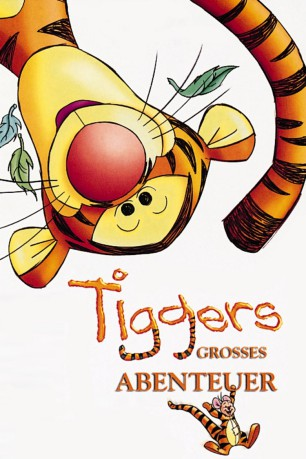

#6295 Tiggers großes Abenteuer
Alternativ: The Tigger Movie
 
 IMDB-Wertung: 6.3 / 10
IMDB-Wertung: 6.3 / 10  Metascore: 0
Metascore: 0 
Im sonnigen Hundert-Morgen-Wald versucht der übermütige Tigger, seine Freunde Puuh, Piglet, Kanga und Roo zu überreden, mit ihm wild herumzuhüpfen. Doch als keiner so richtig Lust darauf hat, beginnt er etwas traurig und aus Langeweile nach seiner Familie zu suchen. Um Tiggers Laune aufzubessern, schreiben seine Freunde ihm einen Brief, in dem sie sich als seine Familie ausgeben. Als der Schwindel auffliegt, ist Wiedergutmachung gefragt...
Jahr: 2000
Dauer: 73 Minuten
FSK: 0
Land: USA Studio: Walt Disney PicturesTonspuren: DD2.0 - ,
Untertitel:
Auflösung: 1080p (1920x1080) Größe: 3665 MB
Genre: Drama, Komödie, Animation/Trick, Familie, Musical
Regisseur: Jun Falkenstein, Chris Butler
Drehbuch: Seikô Shimura
Soundtrack:
Darsteller:
Datei: X:\Kinder Disney HD\Winnie Puuh\Tiggers großes Abenteuer (2000, FSK0, 1920x1080).mkv seit 06.06.2017
Festplatte: Kinder-Filme+Trick
 Es gibt insgesamt 8 Filme in der Gruppe 'Kinder Disney HD\Winnie Puuh'
Es gibt insgesamt 8 Filme in der Gruppe 'Kinder Disney HD\Winnie Puuh'